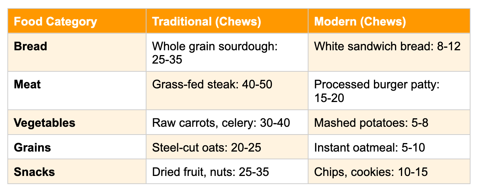
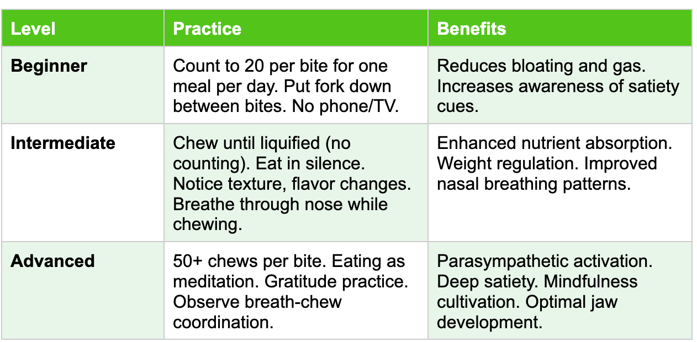
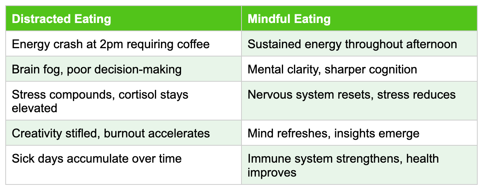
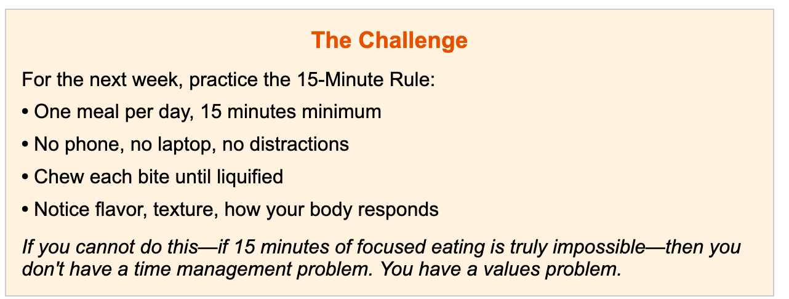
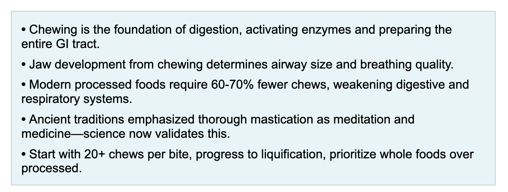

How Modern Food, Ancient Wisdom, and Breathing Unite in Every Bite
In our rush to optimize everything—from our commutes to our careers—we've forgotten to optimize the one thing we do three times a day, every single day: eating. We've reduced chewing to a mechanical afterthought, a mere prelude to swallowing. Yet this simple act, when done properly, holds the keys to better digestion, stronger immunity, enhanced breathing, and even longevity.
Ancient traditions from Ayurveda to Zen Buddhism emphasized thorough mastication. Modern science is catching up, revealing connections between chewing, jaw development, breathing patterns, and overall health that our ancestors intuitively understood. Meanwhile, industrial food has engineered the chew right out of our diets, with consequences we're only beginning to comprehend.
The Physiology of Chewing: More Than Mechanical Breakdown
Chewing is the body's first digestive act, but it's far more sophisticated than simply breaking food into smaller pieces. Each chew initiates a cascade of physiological responses that prime your entire digestive system for the meal ahead.
The Key Insight: Digestion is a relay race, not a sprint. Poor chewing means your stomach and intestines must work overtime to compensate, leading to bloating, gas, indigestion, and poor nutrient absorption.
The Breathing Connection: Your Jaw Shapes Your Airways
Here's where things get fascinating: chewing isn't just about digestion—it's fundamental to how you breathe. The muscles you use to chew are the same ones that develop your jaw, palate, and facial structure. These structures, in turn, determine the size and shape of your airways.
When we eat soft, processed foods that require minimal chewing, we deprive our jaws of the mechanical stimulus needed for proper development. The consequence? Narrower airways, mouth breathing, sleep apnea, and chronic respiratory issues.

The Link: Thorough chewing of tough, fibrous foods exercises the jaw muscles and stimulates bone growth. This creates the structural foundation for nasal breathing—the body's preferred breathing pattern. Improved CO₂ tolerance stabilizes breathing control and supports efficient oxygen unloading via the Bohr effect, optimizing tissue oxygenation.
Scientific Note: Chewing does not directly change blood oxygen levels—gas exchange occurs in the alveoli. Rather, its impact is structural, neural, and regulatory: shaping airway anatomy, influencing breathing patterns, modulating vagal tone, and coordinating digestive and respiratory reflexes that together optimize oxygen utilization and metabolic efficiency.
Modern Food's War on Chewing
The industrialization of food has been an experiment in making everything softer, smoother, and easier to consume. From baby food to protein shakes, white bread to instant oatmeal, modern diets require dramatically less chewing than our ancestors' diets.
This isn't an accident. Food scientists engineer texture to maximize palatability and minimize 'chew resistance'—the industry term for how much effort is required to eat something. The result is food that melts in your mouth, slides down your throat, and bypasses your body's natural satiety mechanisms.
The Hidden Cost: Modern diets deliver 60-70% fewer chews per day than ancestral diets. This isn't just about missing jaw exercise—it's about consuming more calories faster, overwhelming digestive systems, and bypassing satiety signals.
Debunking Chewing Myths

Ancient Wisdom Meets Modern Science
Long before we understood digestive enzymes or airway dynamics, traditional cultures intuited the importance of thorough chewing. Their wisdom, passed down through millennia, is now being validated by research.
The common thread: all these traditions recognized that chewing is meditation, medicine, and metabolic optimization rolled into one simple act.
Practical Implementation: The Chewing Protocol
Knowledge without practice is useless. Here's how to bring the art of chewing back into your life—starting with your very next meal.
Food Selection for Optimal Chewing

The Workplace Epidemic: When Food Becomes Background Noise
Walk into any corporate cafeteria, any tech company lunch room, any conference room during a working lunch, and you'll witness a troubling ritual: people mechanically shoveling food into their mouths while their eyes remain glued to screens, their minds consumed by Slack threads, their conversations dominated by project deadlines.
Food has become secondary. The device—the laptop, the phone, the endless notifications—takes primary focus. Conversations about work trump the conversation your body is trying to have with you about nourishment, satiety, and digestive readiness.
This isn't just poor etiquette. This is a fundamental misunderstanding of what makes someone truly successful.
The Distracted Eating Disaster

The Hard Truth:
If you cannot give yourself 10-20 minutes of undistracted, quality time with your food—if you cannot unplug, be silent, and actually chew—then it's worth asking: what are you optimizing for? What definition of success requires neglecting the body's most basic needs three times a day?
Historically, many high-performing individuals across cultures structured their meals with discipline and presence. Ancient leaders, spiritual teachers, and martial artists alike understood that food was not merely fuel, but a foundation for physical and mental performance.
While we cannot claim direct causation, the pattern is striking: those who achieved lasting impact—whether in conquest, social change, or mastery of craft—approached eating with the same intentionality they brought to their life's work. They were disciplined about how, when, and with what state of mind they ate.
The Productivity Paradox
Modern workplace culture celebrates the person who eats at their desk, who responds to emails between bites, who takes calls while chewing. We've confused busyness with productivity, distraction with dedication.
But here's the paradox: those 15 minutes of focused eating—no devices, no multitasking, just thorough chewing and mindful presence—will make you more productive, not less.
Those 15 minutes aren't stolen from work—they're an investment in your capacity to work. You're not being less productive; you're preventing the metabolic, cognitive, and physiological decline that makes you progressively less effective.
The Question You Must Ask Yourself
If your profession demands that you sacrifice the 30-45 minutes per day needed to eat properly, then one of two things is true:
1. Your profession is poorly structured, unsustainable, and will eventually break you.
2. You've internalized a toxic definition of success that equates self-neglect with dedication.
Either way, something needs to change. Because the most successful people in history—across every domain—understood that peak performance requires deep respect for the body's non-negotiable needs.
Your body doesn't care about your quarterly targets. It doesn't care about your inbox. It has requirements, and when you consistently fail to meet them, it will eventually fail you.
Conclusion: Chewing Towards Vitality
The act of chewing sits at the intersection of nutrition, breathing, and consciousness. It's where physiology meets philosophy, where the mundane becomes meditative. In a world obsessed with hacks and shortcuts, thorough chewing is refreshingly simple: slow down, pay attention, let your body do what it was designed to do.
Modern food has waged a silent war on this ancient practice, engineering chewing resistance out of our diets and, in the process, weakening our jaws, narrowing our airways, disrupting our digestion, and disconnecting us from the visceral experience of nourishment. But we can reclaim this lost art, bite by bite, meal by meal.
The next time you sit down to eat, don't just feed your body—feed your awareness. Notice the texture, the flavor evolution, the rhythm of your breath between chews. Feel your jaw working, your saliva flowing, your body preparing to receive nourishment. This simple act, repeated three times daily for decades, becomes nothing short of transformative.
Chew well. Breathe well. Live well.
Key Takeaways
Scientific References & Further Exploration
The insights in this article are supported by peer-reviewed research from leading institutions. Below are key studies and resources for deeper exploration.
Key Scientific Studies
1. Chewing and Cognitive Function - National Institutes of Health (NIH) - "Chewing Maintains Hippocampus-Dependent Cognitive Function" demonstrates that mastication helps preserve spatial memory and learning. The study reveals multiple neural circuits connecting masticatory organs and the hippocampus."
2. Mastication, Oral Microbiota, and Gut Health - PMC Database - "Chewing Matters: Masticatory Function, Oral Microbiota, and Gut Health in the Nutritional Management of Aging" explores how chewing triggers cephalic-vagal reflexes that stimulate gastric and pancreatic juice secretion. Reduced mastication leads to dysbiosis, gut permeability, and systemic inflammation."
3. Chewing, Satiety, and Weight Management - PubMed - "The Effect of Mastication on Food Intake, Satiety and Body Weight" provides evidence that increasing masticatory cycles reduces food intake and increases satiety through activation of histaminergic neurons, reducing eating rate, and altering digestion kinetics."
4. Mouth Breathing and Facial Development - PMC - "Effects of Mouth Breathing on Facial Skeletal Development in Children: A Systematic Review and Meta-Analysis" demonstrates that mouth breathers show retrognathic maxilla and mandible, vertical growth pattern, downward and backward mandibular rotation, and decreased posterior facial height.
5. Airway Development and Jaw Structure - PMC - "Effects of Mouth Breathing on Maxillofacial and Airway Development in Children" shows mouth breathing leads to mandibular deficiency, underdevelopment of the mandible body, and inferior-posterior rotation throughout developmental stages. Female nasopharyngeal stenosis was more affected than males."
6. Chewing Variability and Digestive Outcomes - PubMed - "Chewing Differences in Consumers Affect Digestion and Colonic Fermentation Outcomes" suggests that modification of chewing may be an effective strategy to control blood glucose levels and shape gut microbiota without altering diets."
Inspirational Content
R. Madhavan: "Drink Your Food, Chew Your Water" - Bollywood actor R. Madhavan famously shares his philosophy on mindful eating at the Radiant Wellness Conclave (RWC16). His mantra—"Drink your food and chew your water"—emphasizes chewing each bite 45-60 times until food becomes liquid. Madhavan credits this practice for his remarkable 21-day body transformation, attributing his success to thorough mastication, intermittent fasting, early walks, and deep sleep.
Key Quote: "If you're not able to give yourself 10 minutes a day to sit quietly without distractions to eat your food, then you're doing a stupid profession and you're not a successful person!"
Additional Resources